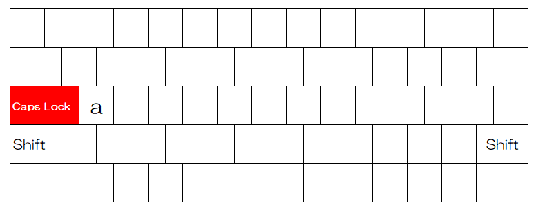

タイピング練習
アルファベットを大文字で
キーボードにはABC大文字が、 Chromebookはabc小文字が、 刻印されています。 キーを押すと出てくるのは小文字。 大文字を入力するには Shiftキーを押しながら キーを押す必要があります。
大文字・小文字を入れ替えるCapslock
Capslockキーは単体では機能しません。 Shiftキーを押しながらCapslockキーを押します。 Chromebookの場合、Capslockキーは "a"キーの左側にあります。
